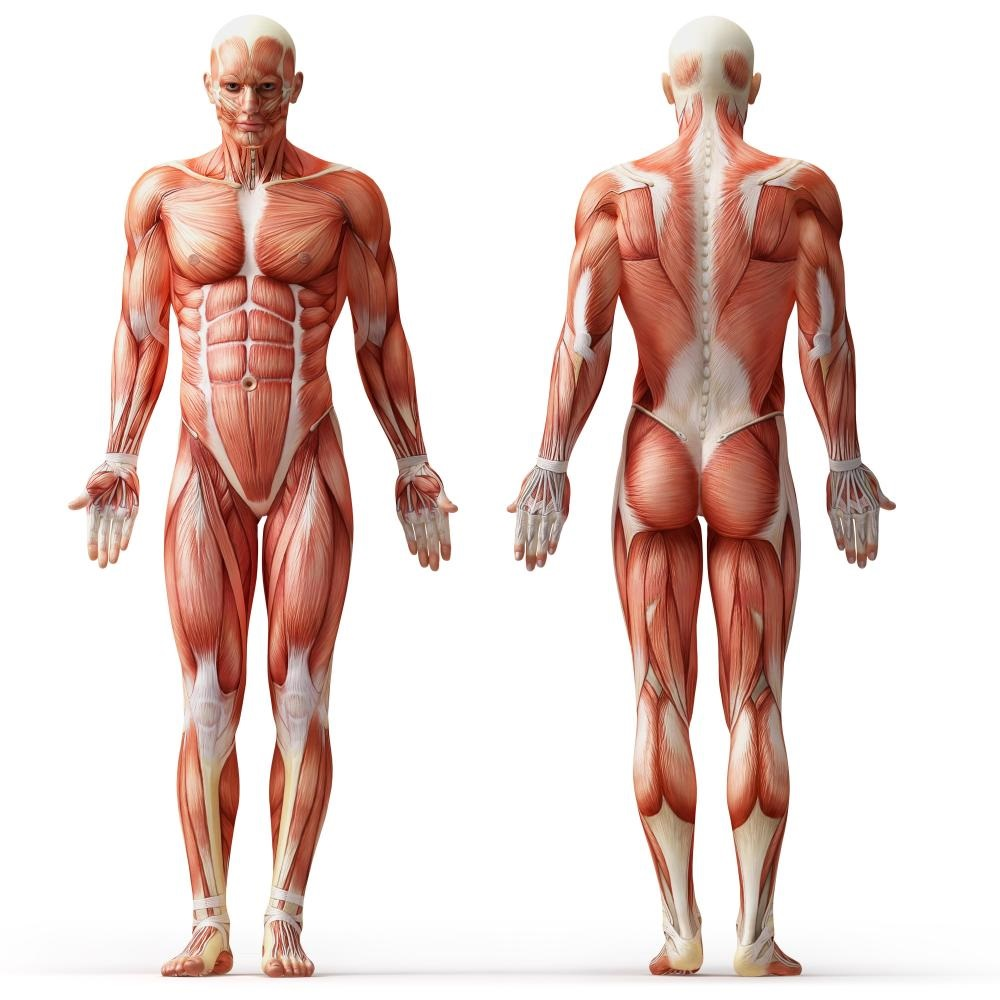
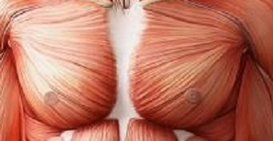
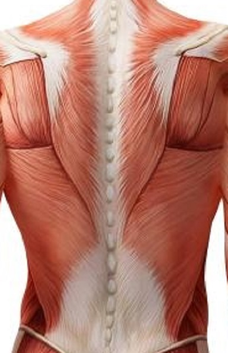
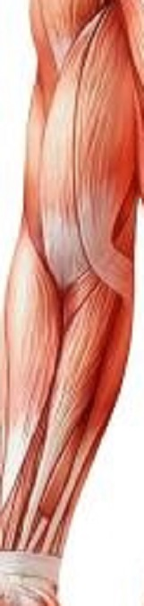
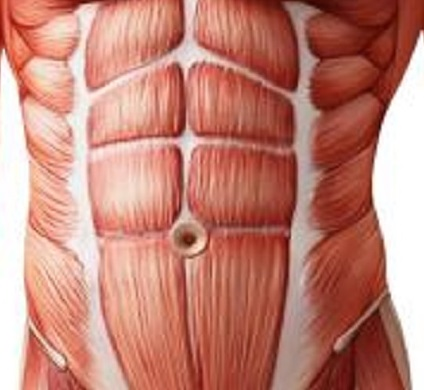
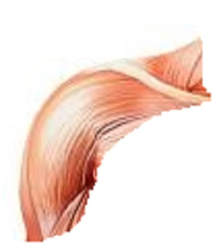

Anatomy Map
Muscle Directory
Below is a list of all the major muscles. If you are curious on learning more about any of the muscles or groups of muscles below you can click on the muscle to learn more information such as strengthening or stretching movements to help you understand how the body works and ways you can improve yourself. This gudie will hopefully help you understand to how to train for a specfic area on your body.
| Muscle Group | Picture | Main movement | Exercises/Stretches |
|---|---|---|---|
| Chest (pectoralis major, pectoralis minor, serratus anterior, subclavius) |
 | Pushing movement that brings the arms in medially. | Stretches
|
| Back (trapezius, latissimus dorsi, levator scapulae, rhomboid major & minor) |
 | Back muscles work together to support the trunk and hold the body upright. They also allows the trunk to move, twist and bend in multiple directions. | Back stretches and exercises |
| Legs (Anterior: quadriceps femoris, vastus lateralis, vastus intermedius, vastus medialis, rectus femoris, sartorius, pectineus. Posterior: biceps femoris, semitendinosus, semimembranosus) |
 |
Used to support the body, provide locomotion, and, in modified form, assist in capturing and eating food. | Leg stretches and exercises |
| Arms (biceps brachii, coracobrachialis, brachialis, triceps brachii) |
 | Used for grip and mobility of the upper limbs. | Arm stretches and exercises |
| Abs (external oblique, internal oblique, transversus abdominis, rectus abdominis, pyramidalis) |
 | Support the trunk, allow movement and hold organs in place by regulating internal abdominal pressure. The deep abdominal muscles, together with muscles in the back, make up your 'core' muscles and help keep your body stable and balanced, and protects your spine. | Ab stretches and exercises |
| Shoulders (deltoid, teres major, supraspinatus, infraspinatus, subscapularis, teres minor) |
 | Stabilization of the shoulder joint and the elevation and rotation of the arm. | Shoulder stretched and exercises |